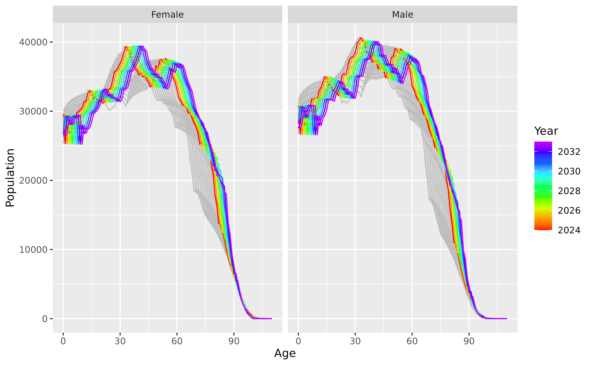
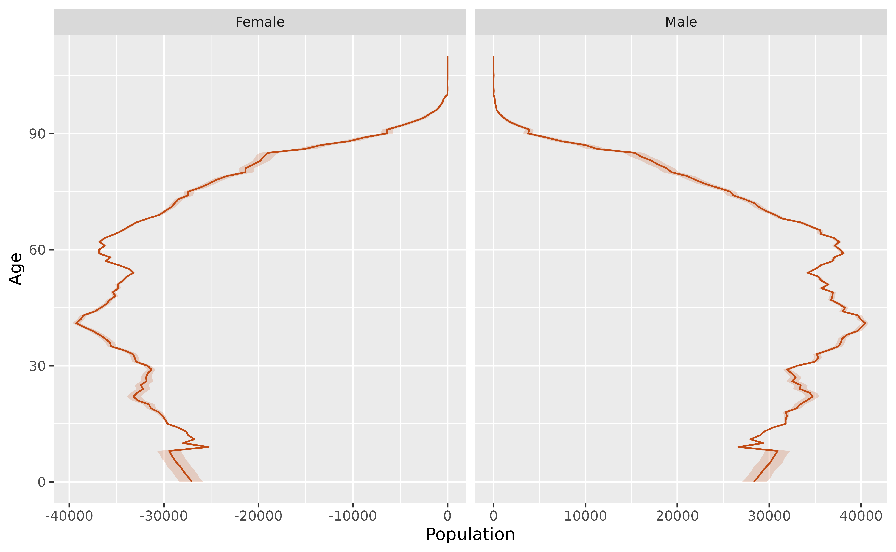

Stochastic population forecasting
Rob J Hyndman
Source:vignettes/population_forecasting.Rmd
population_forecasting.RmdThe vital package can be used for stochastic population forecasting with coherent components. This is based on the papers by Hyndman and Booth (2008) and Hyndman, Booth, and Yasmeen (2013). Following Hyndman and Booth (2008), we use the following demographic growth-balance equations: where
- is the population at time and age ,
- is the number of births at time and age ,
- is the number of deaths at time and age , and
- is the number of net migrants at time and age .
There are slightly different equations for handling the upper age group, and for baby migrants. See Hyndman and Booth (2008) for details.
To simulate future births, deaths and net migrants, we develop three functional data models for fertility, mortality and migration. The models for mortality and migration use coherent components, so that the rates for males and females do not diverge over time.
The following example uses Norwegian data up to 2022, and produces simulated populations for the ten future years. Different models are used for each component to demonstrate the flexibility of the package, but other models can be used as well.
Mortality model
We use a coherent functional data model (Hyndman, Booth, and Yasmeen 2013) for the log
mortality rates. To ensure coherence, we compute the geometric mean of
the sex-specific mortality rates and the corresponding ratios, using the
make_pr() function. The data are smoothed first, and 6
components are used by default in each FDM, although only the first two
are plotted here.
Fertility model
For fertility, we use a functional mean model with a square root transformation, applied to the last 13 years of data. The plotted model shows the fitted values on the square root scale.
Net migration model
For net migration, we use a coherent functional data model. Because
net migration values can be positive or negative, we can’t take products
and ratios. Instead, we need to compute the means and corresponding
differences using the mean_sd() function.
Population simulation
The generate_population() function takes a starting
population, and the three component models, and simulates future
age-sex-specific population values. Here we produce ten replicates of
the future population.
pop <- norway_mortality |>
filter(Sex != "Total", Year == max(Year))
future <- generate_population(
starting_population = pop,
mortality_model = fit_mortality,
fertility_model = fit_fertility,
migration_model = fit_migration,
h = 10,
n_reps = 500
)The first replicate is plotted below, along with the last few years of historical data.
future |>
filter(.rep == "100") |>
ggplot(aes(x = Age, y = Population, group = Year, color = Year)) +
geom_line(
data = norway_mortality |> filter(Year > 2010, Sex != "Total"),
color = "grey",
mapping = aes(group = Year)
) +
geom_line() +
scale_color_gradientn(colours = rainbow(10)[1:9]) +
facet_grid(. ~ Sex)
The simulated populations can be used to compute any quantities that can be derived from populations numbers by sex and age. For example, the mean age of the population for the next 10 years
future |>
group_by(Sex, .rep) |>
summarise(mean_age = sum(Population * (Age + 0.5)) / sum(Population)) |>
group_by(Sex) |>
summarise(mean_age = mean(mean_age))
#> # A vital: 20 x 3 [1Y]
#> # Key: Sex [2]
#> Sex Year mean_age
#> <chr> <dbl> <dbl>
#> 1 Female 2024 42.0
#> 2 Female 2025 42.3
#> 3 Female 2026 42.5
#> 4 Female 2027 42.7
#> 5 Female 2028 42.9
#> 6 Female 2029 43.1
#> 7 Female 2030 43.4
#> 8 Female 2031 43.6
#> 9 Female 2032 43.8
#> 10 Female 2033 44.0
#> 11 Male 2024 40.7
#> 12 Male 2025 40.9
#> 13 Male 2026 41.2
#> 14 Male 2027 41.4
#> 15 Male 2028 41.6
#> 16 Male 2029 41.9
#> 17 Male 2030 42.1
#> 18 Male 2031 42.3
#> 19 Male 2032 42.5
#> 20 Male 2033 42.7We can also plot population pyramids with prediction intervals. For example, here is the population pyramid for 2032 with a 95% prediction interval.
pyramid_2032 <- future |>
filter(Year == 2032) |>
mutate(Population = if_else(Sex == "Female", -Population, Population)) |>
group_by(Age, Sex) |>
summarise(
lo = quantile(Population, 0.025),
med = quantile(Population, 0.5),
hi = quantile(Population, 0.975)
)
pyramid_2032 |>
ggplot(aes(x = Age)) +
geom_ribbon(aes(ymin = lo, ymax = hi, colour = NULL),
fill = "#c14b14", alpha = 0.2
) +
geom_line(aes(y = med), color = "#c14b14") +
facet_grid(. ~ Sex, scales = "free_x") +
labs(y = "Population") +
coord_flip() +
guides(fill = "none", alpha = "none")